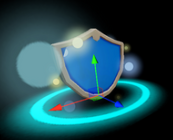
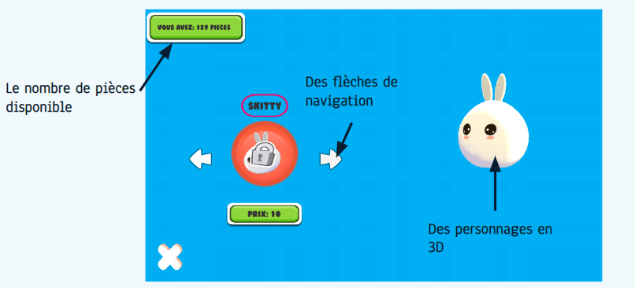

Développement d'un jeu vidéo
Contexte du projet
Qu'est-ce que je devais faire ? Un jeu vidéo. C'est pratiquement la seule consigne que nous avons eue.
Non, pour être plus sérieux, le projet consistait en la réalisation d'un jeu vidéo sans thème imposé, sur le moteur que l'on voulait et en bonus, on pouvait se pencher sur l'accessibilité et le numérique responssable.
Ma réponse : Slime Go !
SLIME GO est un jeu développé en 3D sous le moteur de jeu Unity et entièrement codé en C#. C’est un jeu de type Endless runner qui consiste à survivre le plus longtemps possible sans mourir. Il vise un public plutôt jeune de par son univers avec des personnages enfantins.
En résumé :
| Les outils | Inspiration |
|---|---|
| Utilisation de Unity pour le développement du jeu | Rayman 3 pour son niveau où le joueur avance et doit éviter les obstacles |
| J'ai codé le jeu en C# | Subway Surfer pour son gameplay de course infinie et son aspect visuel |
| Package de rendu HDRP pour les graphismes |
Développement du terrain
Une grande étape de ce projet résidait en la construction du terrain. Il devait être infini, attrayant et constamment en mouvement. C'est pour cela que j'ai décidé de le générer de manière procedurale. Au lieu de le construire de manière fixe dans Unity, j'ai utilisé des scripts pour le générer en matérialisant des plateformes dans la scène en fonction de la position du joueurs. Vous pouvez voir dessous un exemple de génération au début et à la fin du jeu.
{kind=link}
{kind=link}
*image prise dans le jeu
Il est important de noter que les plateformes se génèrent de manière aléatoire ce qui fait que chaque partie est unique. J'ai réalisé cela en créant dans unity une classe qui génère le terrain en ajoutant une plateforme dès que le joueur en finit une.
Aussi, pour donnrt un aspect reponssable à notre jeu, tout ce qui se trouve derrière la caméra du joueur est détruit. Cela permet de comsommer moins de ressources. Si vous souhaitez en savoir plus sur le numérique responsable qui est un aspect important de ma formation : c'est ici !
Les Bonus !
Slime Go est un jeu où l'utilisateur doit avancer le plus loin possible. Et pour l'aider, il y a plusieurs bonus :
-

L'aimant permet au joueur de récolter plus de pièces. Il fonctionne en attirant toutes les pièces proches vers le joueur.
-

Le bouclier permet de protéger le joueur du prochain obstacle rencontré.
{kind=link}
En parlant d'obstacle...
Comme beaucoup de jeux Endless runner, Slime Go intègre différents obstacles qui viendront empêcher le joueur d'avancer. Ils ont été réalisé en utilisant des boites de collision propre à Unity (des Collider) et des scripts pour les faire bouger, notamment en leur donnant une vitesse et une direction (ajout de vecteurs de force).
{kind=link}
{kind=link}
{kind=link}
Un système de magasin
Le personnage principal du jeu est un slime. C'est un personnage enfantin et coloré qui correspond bien à l'univers du jeu. Il est possible de débloquer plusieurs skins pour le personnage en récoltant des pièces dans le jeu. Le joueur pourra donc choisir le skin qu'il préfère pour jouer dans le "magasin du jeu".
{kind=link}
Le magasin a été développé grâce à Unity en utilisant des ressources gratuites et libres de droit provenant de l'Unity Store. Pour le choix des couleurs et de la disposition, je me suis inspiré de tous les jeux de style cartoon que je connaissais.
Je me suis aussi occupé de créer un système de sauvegarde pour toutes les données du jeu. Cela permet au joueur de retrouver ses skins et ses pièces même après avoir quitté le jeu. Je l'ai fait en développant une classe nommée CData. Cette classe est responsable de sauvegarder, charger et stocker les données du jeu. Elle est accessible de partout grâce au patron Singleton. J'ai ensuite utilisé le système des PlayerPrefs de Unity pour stocker les données, mais comme ce n'était pas très sécurisé, j'ai ajouté un système de cryptage. Les données de Slime Go sont ainsi cryptées dans les fichiers. (Cf : l'image ci-dessous)
{kind=link}
{kind=link}
Un jeu accessible
Le jeu a été pensé pour être accessible à tous avec la possibilité de choisir les touches et d'activer ou non les effets lumineux.
En prenant un peu de recul...
Grâce à ce projet, j'ai découvert le travail de groupe sur le long terme et l’organisation et l'investissement que cela demande. Mes compétences en développement Unity et en C# ont augmenté. Au final, j'ai réussi à remplir mes objectifs sur ce projet. SlimeGo est maintenant un jeu fonctionnel et solide.
Si je devais le refaire, je réfléchirais à l'ensemble du jeu dès le début pour éviter de perdre du temps pendant le développement.
{kind=link}